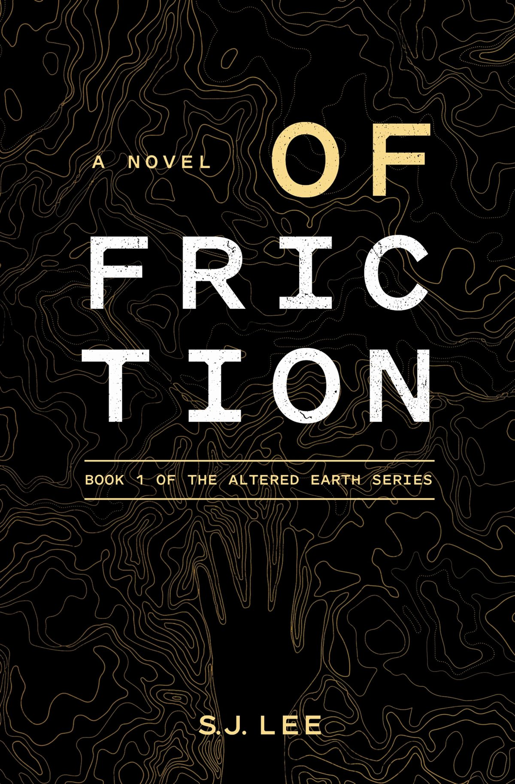
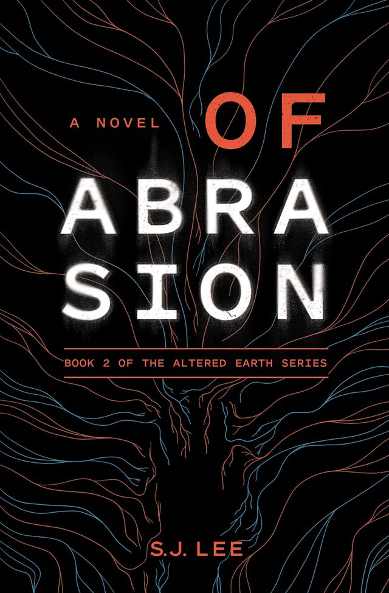
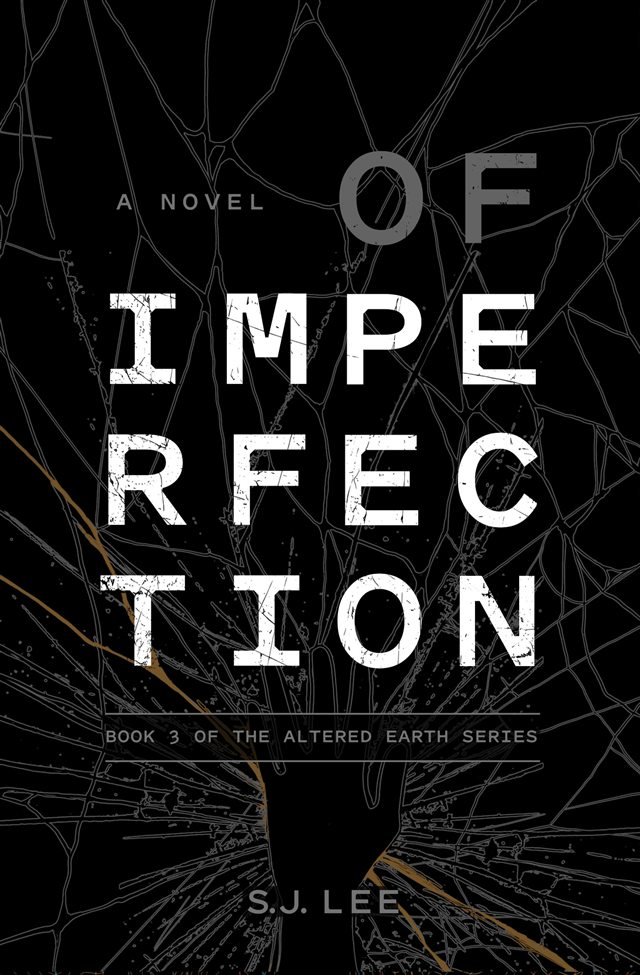
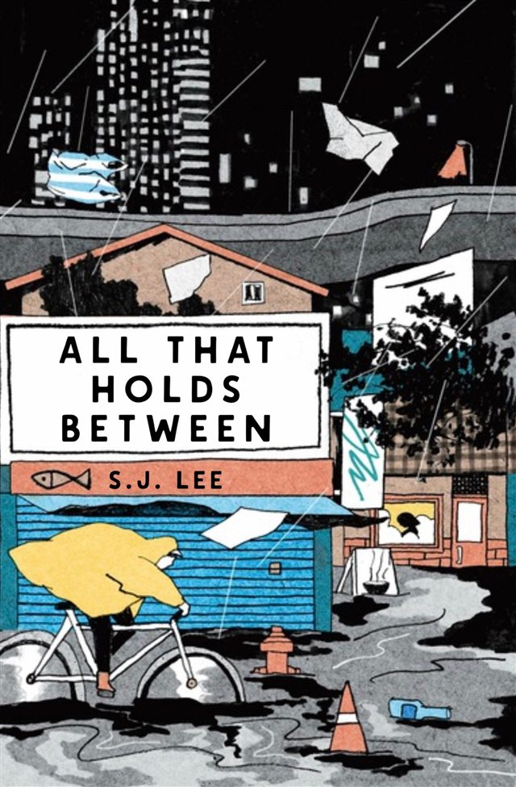
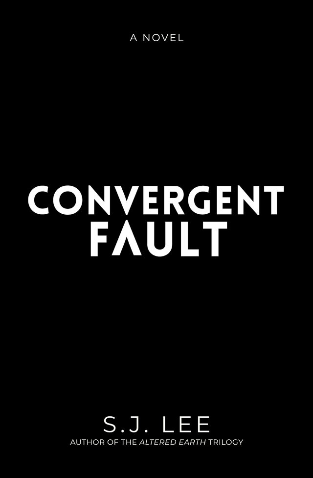

Of Friction
Book 1
A homepage idea made by Sparsh Saini for S.J. Lee. Not their official site.

A fragile chance for peace.
Caught between warring groups.
Book 1 of the Altered Earth series
Sam “Valkyrie” Ryan, a recon specialist, wants her brother to rethink retiring after their next assignment. Then the mission lands between warring groups.
The Altered Earth trilogy
A recon specialist, her brother, and a mission caught between warring groups during a fragile chance for peace.
Book 1

Book 2

Book 3

Standalone
In Meiyu, people take out their most painful emotions and store them on memory drives.
Lena is a courier. She delivers the sealed fragments, until one delivery goes wrong.
Coming
A new novel, from the author of the Altered Earth trilogy. Details to come.

Security specialist by day, award-winning speculative fiction author by night.
Iraq. Mexico. Chile. India. Brazil. Guyana. Across the United States.
I’ve lived and worked in all of them. These days I live in Belgium with my spouse and our dog.
First to hear about new events